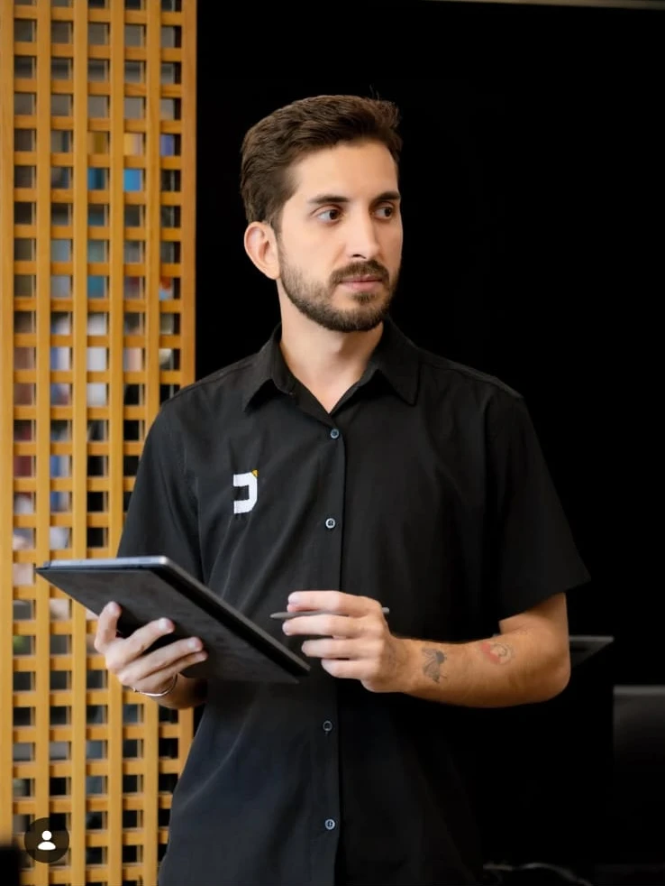

ESTRATÉGIA ENCONTRA CRIATIVIDADE
Sua marca.
Com mais presença.
Ideias ganham forma. Marcas criam conexões.
Unimos estratégia, design e conteúdo para comunicar o que torna o seu negócio único.
CRIATIVIDADE COM INTENÇÃO. COMUNICAÇÃO COM PROPÓSITO.
DA SUA MARCA.

CONEXÕES REAIS.
IDEIAS QUE FICAM.
COMUNICAÇÃO
O QUE FAZEMOS
Da primeira ideia
à próxima conexão.
Soluções que se complementam para dar direção, personalidade e consistência à sua comunicação.
01Estratégia & redes sociais
Um olhar para o seu negócio, um plano para sua presença. Conectamos consultoria estratégica, criação de conteúdo e gestão de redes sociais.
CONSULTORIA ESTRATÉGICA · SOCIAL MEDIA · ANÁLISE DE DESEMPENHO02Identidade & direção de arte
Uma linguagem visual que traduz a personalidade da sua marca. Criamos identidades, elementos gráficos e peças para diferentes momentos da comunicação.
IDENTIDADE VISUAL · DIREÇÃO DE ARTE · PEÇAS AVULSAS03Fotografia & audiovisual
Imagens para apresentar o que sua marca tem de único. Fotografia, filmagem e vinhetas personalizadas com atenção à história que você quer contar.
FOTOGRAFIA · FILMAGEM · VINHETAS PERSONALIZADAS04Storymaker & eventos
A energia do seu evento transformada em narrativa. Cobertura criativa e storytelling ao vivo para conectar quem está presente e quem acompanha de longe.
STORYMAKER · COBERTURA DE EVENTOS · STORYTELLING05Tráfego pago
Uma boa mensagem precisa encontrar seu público. Planejamos campanhas para distribuir sua comunicação de acordo com os objetivos da sua marca.
CAMPANHAS · DISTRIBUIÇÃO · PÚBLICOSSELEÇÃO DE PROJETOS
Personalidades diferentes.
O mesmo olhar criativo.
Identidades que traduzem a essência de cada negócio. Conheça alguns trabalhos do nosso portfólio.
ESSA É A CREARE
Criatividade é o começo.
Propósito é a direção.
O digital é a vitrine.
Nós somos o bastidor criativo.
Acreditamos em uma comunicação que as pessoas entendem, sentem e lembram. Por isso, cada projeto conecta estratégia e criação à personalidade de quem está por trás da marca.
Da identidade visual ao conteúdo, da produção às campanhas, nosso trabalho é dar forma às ideias e construir conexões com intenção.
Conheça a gente em uma conversaVAMOS CRIAR JUNTOS
Qual é o próximo
capítulo da sua marca?
Conte sua ideia. Vamos pensar no próximo passo.